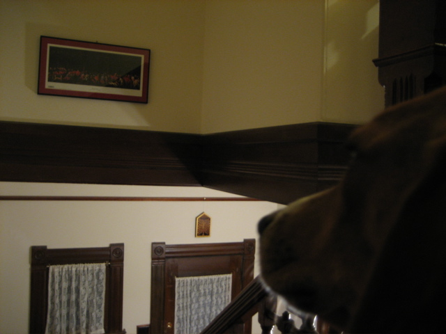

<--Previous Up Next-->

Hunt in the Forest
This print of a painting by Paulo Ucello shows hunters and hounds in the forest. Penny brought it back for Huxley from Oxford's Ashmolean museum. It hangs opposite his favorite spot on the landing of our staircase. Huxley likes to sit and ponder his adventurous ancestors.